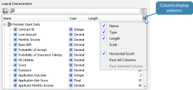

Optimized Decision editor
The Optimized Decision editor enables the user to configure the mapping of input Logical Data Sources to Schema Characteristics and to map the Decision Metrics to a selected output Logical Data Source using a system generated embedded Logical Data Model.
The Optimized Decision editor is made up of the following tabs:
The Schema Properties tab in the Optimized Decision editor enables the user to view a list of the Schema Decisions and Decision Metrics contained in the selected Optimization Schema.
{kind=link}
The Schema Properties tab of the Optimized Decision editor consists of:
Optimization Schema - the Optimization Schema field is where the Optimization Schema components are assigned to the Optimized Decision component. Only after the schema has been assigned to this field will the Schema Decisions and Decision Metrics be populated.
Schema Decisions - These correspond to the Decision Options in Optimize and provide the person configuring the Optimized Decision component with details of the decisioning problem defined by the Optimization Schema by listing the possible actions, offers or treatments which can be assigned to each customer as a result of executing the Optimization Schema. The Schema Decisions correspond to Decision Options in the Optimize software. Schema Decisions are identified by their name.
Decision Metrics - Decision Options in the Optimize software can be further qualified by other properties, such as metrics and variables which typically vary between the different decisions, such as cost, expected profit, probability of accepting or declining the offer. The properties are used in calculating various metrics and portfolio level business Key Performance Indicators (KPIs) both when designing the Optimization scenario and when executing in real time. These metrics are fundamental in the analysis and selection of which scenario to deploy into PowerCurve, and when executing the selected scenario in real-time to provide traceability on the returned optimized decisions. This information is imported into the Studio as Decision Metrics and is used in the calculation of business KPIs for conducting various strategy analysis both pre and post deployment.
The Optimization Inputs tab in the Optimized Decision editor enables the user to map the input characteristics required by the schema to the available Logical Data Source characteristics.
{kind=link}
The Optimization Inputs tab of the Optimized Decision editor consists of:
Logical Characteristics selection
Schema Characteristics – the Schema Characteristics table displays all characteristics required by the Optimization Schema. Once mapped to logical characteristics, they will appear in the Mapped Characteristics table.
The Optimization Results tab in the Optimized Decision editor enables the user to map the Decision Metrics from the selected schema to suitable Logical Data Source characteristics.
For ease, and for accuracy, the Optimization Results tab contains a Create button which will automatically generate and map the embedded Logical Data Model to the Decision Options required by the Optimization Schema. This automatically takes account of the number of selected decisions so that the Decision Metrics can be persisted for each selected decision.
{kind=link}
The Optimization Results tab of the Optimized Decision editor consists of:
Max Selected Decisions - value entered in this field will be used by the Studio to create characteristics that contain arrays that are of a suitable size to fit the maximum number of decision metrics produced at runtime. Dynamic arrays are supported by setting the value to * in this field.
Decision Metrics - Decision Options and Metrics from the Optimize software are imported into the Studio as Decision Metrics and are used in calculating various metrics and portfolio level business Key Performance Indicators (KPIs). This automatically takes account of the number of selected decisions so that the Decision Metrics can be persisted for each selected decision.
Mapped Metrics - shows the characteristics that will store the decision metrics at run-time.
– will create an embedded Logical Data Model on the selected Logical Data Source and automatically map the new Result Characteristic Names with the Decision Metrics and list these mappings within the Mapped Metrics table. The name of the new Logical Data Model will be the name that was given to the Optimized Decision component.
{kind=link}
– allows the user to rename the embedded Logical Data Model in the selected Logical Data Sources and correspondingly the names of the Result Characteristics in the Mapped Metrics table. It also allows the user to update the scale, length and array size of the Result Characteristic.
{kind=link}
– allows the user to delete the embedded Logical Data Source. When the embedded Logical Data Source is deleted the mappings to the Decision Metrics will also be deleted, causing the Mapped Metrics table to become empty.
{kind=link}
The Schema Properties tab is used to:
- select a preconfigured Optimization Schema.
- View a list of the Schema Decisions and Decision Metrics contained in the selected Optimization Schema within the Schema Properties tab.
The Optimization Inputs tab is used to map the Schema Characteristics from the loaded schema to suitable Logical Data Source characteristics within the Optimization Inputs tab.
The Optimization Results tab is used to:
- Map the Decision Metrics from the loaded schema to suitable Logical Data Source characteristics within the Optimization Results tab by creating an embedded Logical Data Model automatically
- specify the expected number of decisions per customer to be returned from the selected schema
{kind=link}
By clicking on the Column Display selector at various points within this editor, the user can select the columns that will be displayed. The choice of columns depends on the table or tree.
The following example is for Logical Characteristics:
 |
{kind=link}
Horizontal Scroll - select to enable or disable horizontal scrolling for the selected table or tree. Horizontal scrolling is useful when multiple columns are displayed.
Pack All Columns - select to resize each displayed column to accommodate the contents of its longest row (that is, the contents of each column entry is displayed in full).
Pack Selected Column - select to resize the selected column to accommodate the contents of its longest row (that is, the contents of each entry in the selected column is displayed in full). To select a column, click on any column entry. Note that this does not work for all tables.
Filters can be used to help the user find and select options from within the Optimized Decision editor.
 Filter for Mapped/Unmapped items – allows the user to display the mapped or unmapped items only.
Filter for Mapped/Unmapped items – allows the user to display the mapped or unmapped items only.
{kind=link}
 Filter by Name – type a word or part of a word next to the Search icon and the table will only display those items whose names match the entered text. For example, price will be listed if the user enters 'Pr' or 'pr'.
Filter by Name – type a word or part of a word next to the Search icon and the table will only display those items whose names match the entered text. For example, price will be listed if the user enters 'Pr' or 'pr'.
A wildcard (*) can be used to match any characteristics or sequence of characteristics, usually with other characters.
{kind=link}